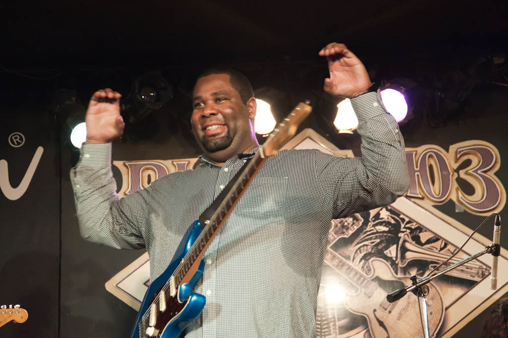

Что нужно сделать, чтобы услышать настоящего негритянского блюзмена из сердца Калифорнии? Просто-напросто следить за расписанием концертов клубов типа "Дом у дороги", куда частенько без особой помпы приезжают разные интересные гастролеры из разных уголков мира.
Один из таких - Кирк Флетчер. По блюзовым меркам он очень молод - всего 36, но уже успел поиграть в компании мастеров своего дела - ветерана губной гармошки Чарли Масселуайта, гитариста Роббена Форда, культовой техасской блюзовой команды Fabulous Thunderbirds и многих-многих других. Надежный и востребованный сайдмен, Кирк долго мечтал о собственной карьере и, наконец, собрав команду Kirk Fletcher Band, записал три сольных альбома: "I'm Here And I'm Gone" (1999), "Shades of Blue" (2003) и новейший "My Turn" (2010). Вряд ли, конечно, пришедшая на московский концерт Кирка публика так уж хорошо знала о его сольной деятельности - Флетчер скорее выступал неким послом блюзовой Америки в нашей неблюзовой стране. А может, хороший блюз бывает и у нас? Мнение музыканта на сей счет на удивление позитивно.
Да и вообще в разговоре Кирк - настоящее воплощение радушия и доброты. Человек, словно сошедший с картинок тех времен, когда слово "негр" еще не было "неполиткорректным": улыбка во всё лицо, толстые щеки, пухлые губы, огромные лапищи, в которых гитара кажется игрушкой, и горящие глаза. Говорит он гулким и увесистым баском, посмеиваясь и вальяжно растягивая звуки. Такой, спокойной и доброжелательной, вышла и наша предконцертная беседа.
Расскажите, как вас пригласили сыграть в России и почему вы выбрали группу Jumping Cats в качестве сопровождения - или, может, это они вас выбрали?
Ну, прежде всего, мне очень повезло, что я познакомился с Владимиром [Русиновым] и его группой Jumping Cats на фестивале в Эстонии, где мы оба играли. Оказалось еще, что он видел мое выступление в составе Fabulous Thunderbirds несколько лет назад. А я услышал его блюз-бэнд в Эстонии и понял, что он реально крут! Владимир спросил меня, не хотел бы я приехать в Россию и сыграть с его командой, и я ответил тут же: "Конечно, парень, у тебя отличная команда!" (Смеется.)
Так что это Владимир выбрал меня, захотел, чтобы я приехал. А я ему очень благодарен, что это всё состоялось.
Вы уже сыграли пару концертов, и как дела идут?
Отлично! По правде, концертов больше. Отличная группа, просто нарадоваться не могу. С ними мне на сцене легко и просто, с ними я могу быть самим собой.
Для вас это обычная ситуация - играть на гастролях с местными группами? Бывают ли трудности?
Всякое бывает! Иногда случается, что музыканты не знают материал или просто неважнецки играют (улыбается), но не в этот раз. Сейчас играть с Владимиром и Jumping Cats - сплошное удовольствие. Они знают все песни, которые нужно, они не хуже, а может, даже и лучше, чем мои ребята дома, в Америке.
Как вы репетировали?
Мы почти и не репетировали. Может, часа полтора. Больше это было похоже на джем, мы скорее прислушивались к своим чувствам, чем репетировали, потому что все и так уже знали материал.
Как вы выбирали, какие песни играть?
Я им подбросил кое-каких песенок, может, часа на два, чтобы разучили. Песен 15. Конечно, это был блу-у-у-уз... Да мне больше нравится, когда нет четких указаний, все чувствуют свободно и действуют по наитию, по ощущению момента. Вот это и есть блюз, на самом деле. А не репетиции до посинения.
Это главным образом блюзовые "нетленки" или ваши собственные вещи?
Пополам. Обычно я не очень упираю на кавера, но, бывает, играю. Как приеду в следующий раз, наверное, сыграю своих песен и привезу кого-нибудь мне в помощь, напарника. Чаще я просто сайдмен... Так что, наверное, в следующий раз я буду исполнять больше своих вещей (смеется).
Всякий раз, когда к нам приезжают иностранные блюзмены, возникают одни и те же споры. Люди говорят, что вот американцы, такие, как вы - это настоящий блюз, всё всерьез. А русские группы поддержки - совсем не то. И когда приезжают артисты из других, "неблюзовых" стран - к примеру, Сербии, Норвегии, все тоже корчат кислую мину. "Норвежский блюз - это не блюз, привезите нам настоящее!" А вы сами работали в том числе и с норвежцами...
Точно, я играл с Ивером Эштадом и его братом Пером - это изумительные музыканты. Их музыка полна красоты и души. Пусть они из другой страны, но они родные для меня. Мы выросли на похожих вещах - на церковной музыке, на госпелах, у нас много общего.
В наши дни никто не проходит путь блюзмена старых времен. Никто не собирает хлопок в Дельте Миссисипи, никто не ведет тот самый образ жизни. Никто! Музыка сейчас другая, время другое, у всех - компьютеры, всё - доступно, и всё везде одинаково. По крайней мере, для меня. Между странами есть какая-то разница, но она не так уж огромна. У американских блюзменов теперь нет такой форы, они наравне со всеми. В Техасе и прочих таких местах теперь всё стало современным. Они совсем не похожи на то, что было раньше. Поэтому всё точно такое же.
Но даже если не сравнивать в категориях "лучше-хуже", всё равно наверняка найдутся отличия в ментальности музыкантов из разных стран. Разве нет?
Скажу честно, как я это чувствую: если музыкант знает блюзовую музыку, чувствует стиль, то не особо-то и важно, откуда он родом. Я переиграл с десятком барабанщиков из Норвегии, которые знают музыку лучше, чем американцы. Они выросли на блюзе, играли его всю жизнь, а какой-нибудь американец, может быть, и вовсе его не слушал. И в России всё точно так же. Ксения, барабанщица Jumping Cats, знает разные шаффлы, разные грувы лучше многих ребят, с которыми мне случалось играть дома в Америке. Думаю, всё зависит от того, сколько ты сам вкладываешь в музыку, как много учишься, играешь, получаешь опыт...
Да, они давно уже этим занимаются...
Точно. Конечно, у меня есть фора - я вырос в этой культуре. Я вырос в церкви, играл в церкви у отца... Церковная музыка, госпел, соул, ритм-н-блюз - всё это окружало меня всегда. Но тот, кто искренне стремится к этой музыке, всегда может ее узнать, неважно, где он живет... Как говорится, тот, кто ищет - тот обретет. (Смеется.)
А расскажи, как вы сами росли, что привело вас к блюзу?
Знаешь, вся моя с жизнь с раннего детства прошла под знаком соула. Соул - в музыке, соул, то есть душа - во всём вокруг. Всё настоящее, то, что звучит в самом сердце, то, что захватывает слушателя, вызывает у него внутренний отклик. Это и есть суть блюза, то, что мне в нём всегда нравилось. Я мог играть самую разную музыку - рок, фанк, что-то еще - но в основе всего для меня оставался блюз. И он всегда был моей первой и настоящей любовью. Потому что в нём есть подлинный внутренний смысл.
Наверное, самый известный коллектив с вашим участием - Fabulous Thunderbirds, с которым вы записали один альбом. Расскажите, как вы оказались в составе?
Я повстречался с Кимом Уилсоном, лидером группы, в Калифорнии, где он жил. Мы познакомились через общих знакомых-блюзменов. Это Джими Уотсон, Эл Блейк, Линвуд Слим - они рассказывали нам друг о друге. Ким пригласил меня сначала в свою сольную блюзовую команду, мы играли стандарты чикагского блюза. А потом, в 2005 году, в T-Birds освободилось место гитариста, он позвонил мне и позвал в группу. К тому моменту мы уже порядочно поиграли вместе.
Но сейчас вы уже там не играете?
Да, я ушел в 2007-м, потому что решил собрать собственную команду. Но это заняло порядочно времени. Покамест я продолжал играть в других составах - с Дойлем Брэмхеллом (блюзмен из Техаса, не путать с экс-участником группы Роджера Уотерса Дойлем Брэмхеллом-II, - примеч. авт.). Недавно е го не стало... Чуточку поиграл с Мишель Бренч. Всех и не перечислишь... Но всё же я не оставлял планов собрать свою команду - Kirk Fletcher Band. И сейчас я почти только ей и занимаюсь.
В вашем репертуаре - и старинные блюзовые стандарты, и более современные вещи. А что вы считаете своей сильной стороной, в какой стилистике чувствуете себя лучше всего?
Что у меня получается лучше всего? (Задумывается.) Наверное, когда в игре появляется какая-то глубина, когда я стараюсь достичь глубины, прочного основания - всего, что заложили другие мастера гитары, которые я слушаю. Кантри-блюз, ранний блюз, госпел, и вся "старая школа"... Вот, наверное, то, что мне ближе всего.
Я слушал ваши вещи на MySpace и других сайтах, и мне показалось, что у вас такой толстый, "жирный" гитарный звук, очень даже современно звучащий...
Есть такое. Мне нравится играть по-разному. Понимать, откуда произошел блюз, но при этом всегда "изобретать себя заново", играть с современным звуком. Да, мне интересны и современные блюзмены. Наверное, вы услышали что-то в этом роде - какую-нибудь безумную гитарную штучку. (Смеется.)
Меня всегда удивляло, когда о современных блюзменах говорят как о "молодом поколении". Вы - как раз мой ровесник, нам по 36 сейчас...
Мне - нет еще, но скоро стукнет 36 (смеется).
И как вы себя ощущаете, когда люди говорят о вас как о "подающим надежды молодом даровании"?
Тащусь! (Смеется.) Надеюсь, у меня еще много времени впереди, чтобы оправдать эти надежды. (Смеется.) Смотря на Би Би Кинга и других мастеров, я не могу не чувствовать себя... немного молодым, что ли. (Улыбается.) Так что... пускай люди продолжают так про меня говорить!
Так говорят даже о 50-летних "ребятах" вроде Уолтера Траута!
Я тоже хочу в 50 так же "зажигать", как этот "мальчик". (Смеется.)
А кого вы можете назвать своими учителями из музыкантов?
О да... Я думаю, прежде всего это моя мамочка. Ее не стало несколько лет назад... Да, она первая объяснила мне, какая музыка хороша, а какая - не очень, она рассказывала, заводила песни, пела для меня сама... Если бы не она, я бы так ничего и не понял. А потом началась церковная музыка. И старший брат много чему меня научил. Он играл на гитаре - да и сейчас играет.
А потом - записи блюзовых мастеров: Альберта Коллинза, Би Би Кинга... Затем - артисты, с которыми посчастливилось играть или слушать их «живьем» - Эл Блейк, Линвуд Слим, Джими Уотсон, Роббен Форд, Майкл Ландау... Майкл не всегда играет блюз, но душа в его игре всегда есть. А это главное. Неважно, что вы играете - блюз, джаз, рок, ар-эн-би, главное, чтобы было нечто для вас важное, то, чем вы можете поделиться с другими. Если вы вкладываете в музыку душу, другие это тоже почувствуют. Так-то вот. (Смеется.)
Я слышал, что вы сами начали писать для гитарных журналов - что-то вроде авторской колонки...
Точно. Надеюсь, это было что-то путное. (Смеется.)
Значит, вы уже дозрели до ситуации, когда вам есть с чем поделиться, чему научить следующее поколение?
Надеюсь! (Улыбается.)
И каковы же ваши советы?
Думаю, надо делать хорошо "домашнюю работу". Исследовать музыку поглубже, не ограничиваться одними известными именами, современными исполнителями, популярными блюзовыми стандартами. Надо копать глубже, изучать историю своего жанра. Неважно, что ты играешь - рок, кантри, что угодно - без знания корней ничего не добьешься.
Напоследок хотел спросить, как вам понравились другие наши музыканты - вы же слушали тех, кто играл в клубе вчера после вас?
О, это потрясающие ребята! Я особенно впечатлен вашими женщинами. Я вчера услышал сразу трёх барышень, которые изумительно играют. (Речь идет о Ксении Дубровской, барабанщице Jumping Cats, Ольге Олейниковой, вокалистке Mellow Yellow, и Галине Киселевой, бас-гитаристке группы Михаила Мишуриса, — примеч. авт.) Даже удивлен немного. (Смеется.)